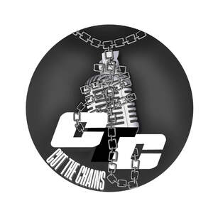

Trade Mark Journal No.2025/028 11 July 2025
UK00004225137 26 June 2025 (41)

- Class 41
- Entertainment; Television entertainment; Cinema entertainment; Musical entertainment; Music entertainment services; Entertainment services; Television entertainment services; Education, entertainment and sports; Sports entertainment services; Radio entertainment; Cabaret entertainment services; Musical entertainment services; Live entertainment; Tv entertainment services; Live entertainment services; Popular entertainment services; Entertainment services in the nature of organizing social entertainment events; Corporate hospitality (entertainment); Provision of musical entertainment; Cinematographic entertainment services; Audio entertainment services; Entertainment club services; Video entertainment services; Education, entertainment and sport services; Provision of entertainment; Jazz music entertainment services; Animated musical entertainment services; Television and radio entertainment services; Radio and television entertainment services; Entertainment in the nature of theater productions; Artistic management of entertainment venues; Organising of entertainment; Entertainment services for children; Production of live entertainment; Television and radio entertainment; Radio and television entertainment; Radio entertainment production; Entertainment services in the form of cinema performances; Online entertainment services; Organisation of musical entertainment; Services for the production of entertainment in the form of television; Production of television entertainment features; Live entertainment production services; Online interactive entertainment; Arranging of musical entertainment; Entertainment booking services; Production of audio entertainment; Musical group entertainment services; Lighting productions for entertainment purposes; Provision of live entertainment; Production of live entertainment events; Internet radio entertainment services; Arranging of visual entertainment; Live demonstrations for entertainment; Closed circuit television entertainment services; Entertainment services relating to esports; Entertainment services in the nature of competitions; Providing facilities for entertainment; Night club services [entertainment]; Arranging of competitions for education or entertainment; Staged light entertainment services; Entertainment services in the nature of interactive television programmes; Provision of radio and television entertainment services; Arranging of festivals for entertainment purposes; Entertainment services in the nature of contests; Organization of entertainment competitions; Fan club services (entertainment); Exhibition services for entertainment purposes; Entertainment in the nature of dance performances; Production of television entertainment programmes; Arranging of visual and musical entertainment; Organization of entertainment events; Production of films for entertainment purposes; Entertainment services provided by television; Provision of entertainment services through the media of television; Production of live entertainment features; Conducting of entertainment events; Entertainment services in the form of concert performances; Organization of competitions [education or entertainment]; Organization of competitions for education or entertainment; Services providing entertainment in the form of live musical performances; Entertainment in the form of live musical performances (Services providing -); Film production for entertainment purposes; Organisation of entertainment services; Entertainment services for producing live shows; Presentation of live entertainment events; Festivals (Organisation of -) for entertainment purposes; Multimedia entertainment software publishing services; Entertainment services provided at nightclubs; Sound recording studios; Sound recording services; Production of sound recordings; Production of sound and music recordings; Sound recording studio services; Production of sound and video recordings; Hire of sound recording apparatus; Recording of music; Music recording; Production of video and/or sound recordings; Audio recording and production; Sound recording and video entertainment services; Editing or recording of sounds and images; Recording studio services for the production of sound bearing discs; Production of entertainment in the form of sound recordings; Production of audio recordings; Editing of audio recordings; Audio recording studio services; Audio recording services; Production of video and audio recordings; Audio and video recording services; Audio recording and production services; Production of audio master recordings; Music recording studio services; Recording studios; Production of video recordings; Production of musical works in a recording studio; Production of musical recordings; Editing of video recordings; Production of audiovisual recordings; Production of stage performances; Film production; Production of shows; Production of music; Music production; Production of cabarets; Organisation, production and presentation of theatrical performances; Television production; Production of animation; Production of live performances; Video production; Production of musical videos; Television show production; Production of films; Production of talent shows; Audio production; Production of music shows; Consultancy on film and music production; Film production services; Videotape production; Organisation of stage shows; Video film production; Production of live shows; Live show production services; Shows and films production; Production of audio-visual recordings; Production of videos; Videotape film production; Production (Videotape film -); Production of music concerts; Production of video-tapes; Animation production services; Music production services; Production of cine-films; Live stage shows; Services for the production of entertainment in the form of film; Production of video films; Production of television films; Production of films in studios; Production of cinematographic films; Video production services; Television, radio and film production; Radio production services; Audio production services; Entertainment services by stage production and cabaret; Musical performances; Live musical performances; Organisation of live musical performances; Live musical concerts; Services for the production of entertainment in the form of video; Film distribution; Recording, film, video and television studio services; Video tape film production; Film and video tape film production; Audio, film, video and television recording services; Post-production editing services in the field of music, videos and film; Film studio services; Film production, other than advertising films; Theater production services; Cinematographic film studio services; Production of entertainment in the form of video tapes; Audio and video production, and photography; Special effects animation services for film and video; Audio tape production services; Production of video cassettes; Services in the production of animated motion picture entertainment; Organizing and presenting displays of entertainment relating to style and fashion; Arranging of displays for entertainment purposes; Organizing and arranging exhibitions for entertainment purposes; Arranging of seminars relating to entertainment; Arranging of conferences relating to entertainment; Arranging of presentations for entertainment purposes; Arranging of entertainment shows; Organising of shows for entertainment purposes; Arranging and conducting of entertainment events; Arranging of music shows; Organising of festivals relating to jazz music; Entertainment in the form of recorded music (Services providing -); Organising of entertainment competitions; Organising of competitions for entertainment; Competitions (Organising of entertainment -); Arranging of music performances; Presentation of music concerts; Music mixing services; Music publishing and music recording services; Music composition services; Music publishing services; Music performance services; Live music services; Music concert services; Music festival services; Music competition services; Music performances; Production of educational sound and video recordings; Production of podcasts; Production of audio programs; Performance of dance, music and drama; Production of documentaries; Audio, video and multimedia production, and photography; Production of pre-recorded cinema films; Performance of music and singing; Production of audio tapes for entertainment purposes; Music publishing; Publishing of music; Production of entertainment shows featuring singers; Production of entertainment shows featuring instrumentalists; Artistic management of music venues; Video and DVD film production; Music concerts; Direction of music performances; Operation of video and audio equipment for the production of radio and television programs; Show production services; Music library services; Music group services; Musical performance services; Musical education services; Studio services (Recording -); Recording studio services; Rehearsal [recording] studio services; Studio services for the recording of videos; Recording studio services for videos; Rental of recording studios; Provision of video recording studio facilities; Provision of video recording studio services; Hire of recording studios; Performing of music and singing; Providing audio or video studio services; Recording services; Provision of recording studio facilities; Performance of music; Video recording services; Live music performances; Live music concerts; Entertainment services for sharing audio and video recordings; Teaching of music; Selection and compilation of pre-recorded music for broadcasting by others; Digital video, audio and multimedia entertainment publishing services; Radio entertainment services; Entertainment services for matching users with audio and video recordings.
Kori Jamhal Ricketts-Bennett